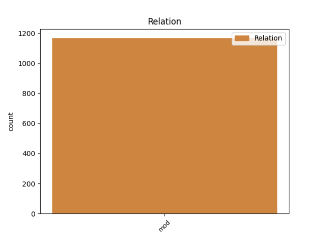
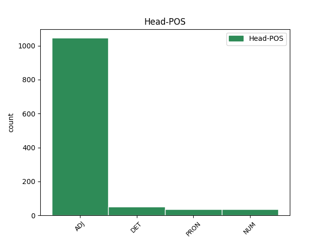
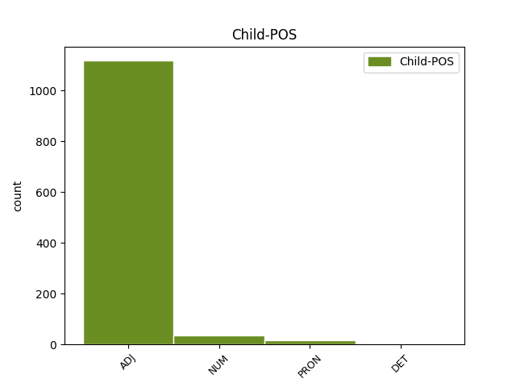

Distribution of features within this leaf



Agreement Rules sorted by frequency.
- When the dependent token is the modifer(mod) of the head token, and the head token is ADJ and the dependent token is ADJ.
1 Påskevaktene _ _ _ _ 0 _ _ _
2 har _ _ _ _ 0 _ _ _
3 stort stor ADJ _ Definite=Ind|Degree=Pos|Gender=Neut|Number=Sing 4 mod _ _
4 sett se ADJ _ Definite=Ind|Gender=Neut|Number=Sing|VerbForm=Part 0 _ _ _
5 hatt _ _ _ _ 0 _ _ _
6 rolege _ _ _ _ 0 _ _ _
7 dagar _ _ _ _ 0 _ _ _
8 på _ _ _ _ 0 _ _ _
9 Skafsåheia _ _ _ _ 0 _ _ _
10 opp _ _ _ _ 0 _ _ _
11 gjennom _ _ _ _ 0 _ _ _
12 åra _ _ _ _ 0 _ _ _
13 . _ _ _ _ 0 _ _ _
1 Det _ _ _ _ 0 _ _ _
2 som _ _ _ _ 0 _ _ _
3 har _ _ _ _ 0 _ _ _
4 utløyst _ _ _ _ 0 _ _ _
5 trusselmeldinga _ _ _ _ 0 _ _ _
6 er _ _ _ _ 0 _ _ _
7 ei _ _ _ _ 0 _ _ _
8 teneste _ _ _ _ 0 _ _ _
9 Holte _ _ _ _ 0 _ _ _
10 har _ _ _ _ 0 _ _ _
11 gjort _ _ _ _ 0 _ _ _
12 mange mange ADJ _ Degree=Pos|Number=Plur 13 mod _ _
13 andre annan DET _ Number=Plur|PronType=Dem 0 _ _ _
14 glade _ _ _ _ 0 _ _ _
15 for _ _ _ _ 0 _ _ _
16 sidan _ _ _ _ 0 _ _ _
17 1993 _ _ _ _ 0 _ _ _
18 , _ _ _ _ 0 _ _ _
19 nemleg _ _ _ _ 0 _ _ _
20 reinsdyrjegerane _ _ _ _ 0 _ _ _
21 . _ _ _ _ 0 _ _ _
1 Om _ _ _ _ 0 _ _ _
2 ikkje _ _ _ _ 0 _ _ _
3 frammøtet _ _ _ _ 0 _ _ _
4 var _ _ _ _ 0 _ _ _
5 det _ _ _ _ 0 _ _ _
6 største _ _ _ _ 0 _ _ _
7 , _ _ _ _ 0 _ _ _
8 var _ _ _ _ 0 _ _ _
9 engasjementet _ _ _ _ 0 _ _ _
10 for _ _ _ _ 0 _ _ _
11 ein _ _ _ _ 0 _ _ _
12 distriktskamp _ _ _ _ 0 _ _ _
13 heilhuga _ _ _ _ 0 _ _ _
14 frå _ _ _ _ 0 _ _ _
15 om _ _ _ _ 0 _ _ _
16 lag _ _ _ _ 0 _ _ _
17 30 30 NUM _ Number=Plur|NumType=Card 18 mod _ _
18 frammøtte frammøte ADJ _ Number=Plur|VerbForm=Part 0 _ _ _
19 . _ _ _ _ 0 _ _ _
1 Dei dei PRON _ Animacy=Hum|Case=Nom|Number=Plur|Person=3|PronType=Prs 0 _ _ _
2 møtte _ _ _ _ 0 _ _ _
3 mannsterke mannsterk ADJ _ Degree=Pos|Number=Plur 1 mod _ _
4 fram _ _ _ _ 0 _ _ _
5 på _ _ _ _ 0 _ _ _
6 folkemøtet _ _ _ _ 0 _ _ _
7 til _ _ _ _ 0 _ _ _
8 grendelaget _ _ _ _ 0 _ _ _
9 for _ _ _ _ 0 _ _ _
10 å _ _ _ _ 0 _ _ _
11 seie _ _ _ _ 0 _ _ _
12 si _ _ _ _ 0 _ _ _
13 hjartans _ _ _ _ 0 _ _ _
14 meining _ _ _ _ 0 _ _ _
15 om _ _ _ _ 0 _ _ _
16 kommuneleiinga _ _ _ _ 0 _ _ _
17 . _ _ _ _ 0 _ _ _
1 Det _ _ _ _ 0 _ _ _
2 at _ _ _ _ 0 _ _ _
3 dei _ _ _ _ 0 _ _ _
4 tre _ _ _ _ 0 _ _ _
5 skandinaviske _ _ _ _ 0 _ _ _
6 språka _ _ _ _ 0 _ _ _
7 ligg _ _ _ _ 0 _ _ _
8 så _ _ _ _ 0 _ _ _
9 nær _ _ _ _ 0 _ _ _
10 kvarandre _ _ _ _ 0 _ _ _
11 at _ _ _ _ 0 _ _ _
12 dei _ _ _ _ 0 _ _ _
13 er _ _ _ _ 0 _ _ _
14 gjensidig _ _ _ _ 0 _ _ _
15 forståelege _ _ _ _ 0 _ _ _
16 , _ _ _ _ 0 _ _ _
17 inneber _ _ _ _ 0 _ _ _
18 at _ _ _ _ 0 _ _ _
19 vi _ _ _ _ 0 _ _ _
20 i _ _ _ _ 0 _ _ _
21 Noreg _ _ _ _ 0 _ _ _
22 får _ _ _ _ 0 _ _ _
23 direkte _ _ _ _ 0 _ _ _
24 tilgang _ _ _ _ 0 _ _ _
25 til _ _ _ _ 0 _ _ _
26 eit _ _ _ _ 0 _ _ _
27 mykje _ _ _ _ 0 _ _ _
28 større _ _ _ _ 0 _ _ _
29 språk- _ _ _ _ 0 _ _ _
30 og _ _ _ _ 0 _ _ _
31 kulturområde _ _ _ _ 0 _ _ _
32 enn _ _ _ _ 0 _ _ _
33 vårt vår PRON _ Gender=Neut|Number=Sing|Poss=Yes|PronType=Prs 35 mod _ _
34 eige _ _ _ _ 0 _ _ _
35 norske norsk ADJ _ Definite=Def|Degree=Pos|Number=Sing 0 _ _ _
36 . _ _ _ _ 0 _ _ _
1 Det _ _ _ _ 0 _ _ _
2 er _ _ _ _ 0 _ _ _
3 svært _ _ _ _ 0 _ _ _
4 verdfullt _ _ _ _ 0 _ _ _
5 for _ _ _ _ 0 _ _ _
6 både _ _ _ _ 0 _ _ _
7 unge _ _ _ _ 0 _ _ _
8 og _ _ _ _ 0 _ _ _
9 eldre _ _ _ _ 0 _ _ _
10 å _ _ _ _ 0 _ _ _
11 få _ _ _ _ 0 _ _ _
12 eit _ _ _ _ 0 _ _ _
13 vidsyn _ _ _ _ 0 _ _ _
14 utover _ _ _ _ 0 _ _ _
15 sitt sin PRON _ Gender=Neut|Number=Sing|Poss=Yes|PronType=Prs 16 mod _ _
16 eige eigen DET _ Definite=Ind|Gender=Neut|Number=Sing|PronType=Prs 0 _ _ _
17 , _ _ _ _ 0 _ _ _
18 meiner _ _ _ _ 0 _ _ _
19 ho _ _ _ _ 0 _ _ _
20 . _ _ _ _ 0 _ _ _
1 Me _ _ _ _ 0 _ _ _
2 skogeigarar _ _ _ _ 0 _ _ _
3 har _ _ _ _ 0 _ _ _
4 dei _ _ _ _ 0 _ _ _
5 siste sist ADJ _ Degree=Pos|Number=Plur 6 mod _ _
6 10 10 NUM _ Number=Plur|NumType=Card 0 _ _ _
7 - _ _ _ _ 0 _ _ _
8 20 _ _ _ _ 0 _ _ _
9 åra _ _ _ _ 0 _ _ _
10 vore _ _ _ _ 0 _ _ _
11 for _ _ _ _ 0 _ _ _
12 passive _ _ _ _ 0 _ _ _
13 leverandørar _ _ _ _ 0 _ _ _
14 , _ _ _ _ 0 _ _ _
15 og _ _ _ _ 0 _ _ _
16 blitt _ _ _ _ 0 _ _ _
17 styrt _ _ _ _ 0 _ _ _
18 av _ _ _ _ 0 _ _ _
19 internasjonale _ _ _ _ 0 _ _ _
20 marknadskrefter _ _ _ _ 0 _ _ _
21 . _ _ _ _ 0 _ _ _
1 Hovudbrannbilen _ _ _ _ 0 _ _ _
2 i _ _ _ _ 0 _ _ _
3 Førde _ _ _ _ 0 _ _ _
4 er _ _ _ _ 0 _ _ _
5 20 _ _ _ _ 0 _ _ _
6 år _ _ _ _ 0 _ _ _
7 , _ _ _ _ 0 _ _ _
8 har _ _ _ _ 0 _ _ _
9 berre _ _ _ _ 0 _ _ _
10 gått _ _ _ _ 0 _ _ _
11 25 25 NUM _ Number=Plur|NumType=Card 12 mod _ _
12 000 000 NUM _ Number=Plur|NumType=Card 0 _ _ _
13 kilometer _ _ _ _ 0 _ _ _
14 , _ _ _ _ 0 _ _ _
15 men _ _ _ _ 0 _ _ _
16 likevel _ _ _ _ 0 _ _ _
17 merkast _ _ _ _ 0 _ _ _
18 alderdommen _ _ _ _ 0 _ _ _
19 . _ _ _ _ 0 _ _ _
1 Alle _ _ _ _ 0 _ _ _
2 har _ _ _ _ 0 _ _ _
3 vore _ _ _ _ 0 _ _ _
4 kjempeflinke _ _ _ _ 0 _ _ _
5 , _ _ _ _ 0 _ _ _
6 men _ _ _ _ 0 _ _ _
7 spesielt _ _ _ _ 0 _ _ _
8 dei dei PRON _ Animacy=Hum|Case=Nom|Number=Plur|Person=3|PronType=Prs 15 mod _ _
9 som _ _ _ _ 0 _ _ _
10 har _ _ _ _ 0 _ _ _
11 jobba _ _ _ _ 0 _ _ _
12 med _ _ _ _ 0 _ _ _
13 bakken _ _ _ _ 0 _ _ _
14 , _ _ _ _ 0 _ _ _
15 dei dei PRON _ Animacy=Hum|Case=Nom|Number=Plur|Person=3|PronType=Prs 0 _ _ _
16 har _ _ _ _ 0 _ _ _
17 stått _ _ _ _ 0 _ _ _
18 på _ _ _ _ 0 _ _ _
19 døgnet _ _ _ _ 0 _ _ _
20 rundt _ _ _ _ 0 _ _ _
21 , _ _ _ _ 0 _ _ _
22 skryter _ _ _ _ 0 _ _ _
23 Krog _ _ _ _ 0 _ _ _
24 . _ _ _ _ 0 _ _ _
1 Vi vi PRON _ Animacy=Hum|Case=Nom|Number=Plur|Person=1|PronType=Prs 0 _ _ _
2 hadde _ _ _ _ 0 _ _ _
3 hjartet _ _ _ _ 0 _ _ _
4 i _ _ _ _ 0 _ _ _
5 halsen _ _ _ _ 0 _ _ _
6 , _ _ _ _ 0 _ _ _
7 alle _ _ _ _ 0 _ _ _
8 fire fire NUM _ Number=Plur|NumType=Card 1 mod _ SpaceAfter=No
9 , _ _ _ _ 0 _ _ _
10 men _ _ _ _ 0 _ _ _
11 kjæresten _ _ _ _ 0 _ _ _
12 klarte _ _ _ _ 0 _ _ _
13 å _ _ _ _ 0 _ _ _
14 få _ _ _ _ 0 _ _ _
15 oss _ _ _ _ 0 _ _ _
16 på _ _ _ _ 0 _ _ _
17 rett _ _ _ _ 0 _ _ _
18 kjøl _ _ _ _ 0 _ _ _
19 , _ _ _ _ 0 _ _ _
20 så _ _ _ _ 0 _ _ _
21 vi _ _ _ _ 0 _ _ _
22 fekk _ _ _ _ 0 _ _ _
23 snudd _ _ _ _ 0 _ _ _
24 . _ _ _ _ 0 _ _ _
1 Men _ _ _ _ 0 _ _ _
2 alt all DET _ Gender=Neut|Number=Sing|PronType=Tot 3 mod _ _
3 dette dette PRON _ Gender=Neut|Number=Sing|Person=3|PronType=Prs 0 _ _ _
4 vil _ _ _ _ 0 _ _ _
5 endra _ _ _ _ 0 _ _ _
6 seg _ _ _ _ 0 _ _ _
7 . _ _ _ _ 0 _ _ _
1 Han _ _ _ _ 0 _ _ _
2 gjev _ _ _ _ 0 _ _ _
3 seg _ _ _ _ 0 _ _ _
4 på _ _ _ _ 0 _ _ _
5 det _ _ _ _ 0 _ _ _
6 minste _ _ _ _ 0 _ _ _
7 av _ _ _ _ 0 _ _ _
8 mistaki _ _ _ _ 0 _ _ _
9 , _ _ _ _ 0 _ _ _
10 problematiserer _ _ _ _ 0 _ _ _
11 eit _ _ _ _ 0 _ _ _
12 anna _ _ _ _ 0 _ _ _
13 punkt _ _ _ _ 0 _ _ _
14 hjå _ _ _ _ 0 _ _ _
15 Korslund _ _ _ _ 0 _ _ _
16 - _ _ _ _ 0 _ _ _
17 og _ _ _ _ 0 _ _ _
18 ser _ _ _ _ 0 _ _ _
19 heilt _ _ _ _ 0 _ _ _
20 burt _ _ _ _ 0 _ _ _
21 frå _ _ _ _ 0 _ _ _
22 dei _ _ _ _ 0 _ _ _
23 elleve elleve NUM _ Number=Plur|NumType=Card 24 mod _ _
24 andre annan DET _ Number=Plur|PronType=Dem 0 _ _ _
25 . _ _ _ _ 0 _ _ _
Disagree Examples:
1 Eg _ _ _ _ 0 _ _ _
2 les _ _ _ _ 0 _ _ _
3 Paulus _ _ _ _ 0 _ _ _
4 på _ _ _ _ 0 _ _ _
5 litt litt ADJ _ Definite=Ind|Degree=Pos|Gender=Neut|Number=Sing 6 mod _ _
6 andre annan DET _ Number=Plur|PronType=Dem 0 _ _ _
7 måtar _ _ _ _ 0 _ _ _
8 . _ _ _ _ 0 _ _ _
1 Kan _ _ _ _ 0 _ _ _
2 han _ _ _ _ 0 _ _ _
3 anerkjenne _ _ _ _ 0 _ _ _
4 heidenske _ _ _ _ 0 _ _ _
5 religiøse _ _ _ _ 0 _ _ _
6 lengslar _ _ _ _ 0 _ _ _
7 som _ _ _ _ 0 _ _ _
8 legitime _ _ _ _ 0 _ _ _
9 - _ _ _ _ 0 _ _ _
10 og _ _ _ _ 0 _ _ _
11 " _ _ _ _ 0 _ _ _
12 sanne sann ADJ _ Degree=Pos|Number=Plur 0 _ _ _
13 så _ _ _ _ 0 _ _ _
14 langt lang ADJ _ Definite=Ind|Degree=Pos|Gender=Neut|Number=Sing 12 mod _ _
15 det _ _ _ _ 0 _ _ _
16 rekk _ _ _ _ 0 _ _ _
17 " _ _ _ _ 0 _ _ _
18 - _ _ _ _ 0 _ _ _
19 på _ _ _ _ 0 _ _ _
20 denne _ _ _ _ 0 _ _ _
21 måten _ _ _ _ 0 _ _ _
22 ? _ _ _ _ 0 _ _ _
1 Dette _ _ _ _ 0 _ _ _
2 er _ _ _ _ 0 _ _ _
3 jo _ _ _ _ 0 _ _ _
4 veldig veldig ADJ _ Definite=Ind|Degree=Pos|Gender=Neut|Number=Sing 5 mod _ _
5 sentrale sentral ADJ _ Degree=Pos|Number=Plur 0 _ _ _
6 uttrykk _ _ _ _ 0 _ _ _
7 i _ _ _ _ 0 _ _ _
8 gresk-romersk _ _ _ _ 0 _ _ _
9 religion _ _ _ _ 0 _ _ _
10 i _ _ _ _ 0 _ _ _
11 ulike _ _ _ _ 0 _ _ _
12 typar _ _ _ _ 0 _ _ _
13 . _ _ _ _ 0 _ _ _
1 Men _ _ _ _ 0 _ _ _
2 det _ _ _ _ 0 _ _ _
3 er _ _ _ _ 0 _ _ _
4 verkeleg _ _ _ _ 0 _ _ _
5 ein _ _ _ _ 0 _ _ _
6 link _ _ _ _ 0 _ _ _
7 her _ _ _ _ 0 _ _ _
8 , _ _ _ _ 0 _ _ _
9 mellom _ _ _ _ 0 _ _ _
10 det _ _ _ _ 0 _ _ _
11 heidenske _ _ _ _ 0 _ _ _
12 og _ _ _ _ 0 _ _ _
13 evangeliet _ _ _ _ 0 _ _ _
14 - _ _ _ _ 0 _ _ _
15 ein _ _ _ _ 0 _ _ _
16 link _ _ _ _ 0 _ _ _
17 som _ _ _ _ 0 _ _ _
18 ligg _ _ _ _ 0 _ _ _
19 i _ _ _ _ 0 _ _ _
20 skapinga _ _ _ _ 0 _ _ _
21 ( _ _ _ _ 0 _ _ _
22 absolutt absolutt ADJ _ Definite=Ind|Degree=Pos|Gender=Neut|Number=Sing 23 mod _ _
23 alle all DET _ Number=Plur|PronType=Tot 0 _ _ _
24 ting _ _ _ _ 0 _ _ _
25 er _ _ _ _ 0 _ _ _
26 skapt _ _ _ _ 0 _ _ _
27 av _ _ _ _ 0 _ _ _
28 Gud _ _ _ _ 0 _ _ _
29 - _ _ _ _ 0 _ _ _
30 her _ _ _ _ 0 _ _ _
31 er _ _ _ _ 0 _ _ _
32 kimen _ _ _ _ 0 _ _ _
33 til _ _ _ _ 0 _ _ _
34 Augustins _ _ _ _ 0 _ _ _
35 understreking _ _ _ _ 0 _ _ _
36 av _ _ _ _ 0 _ _ _
37 vondskap _ _ _ _ 0 _ _ _
38 som _ _ _ _ 0 _ _ _
39 " _ _ _ _ 0 _ _ _
40 privation _ _ _ _ 0 _ _ _
41 " _ _ _ _ 0 _ _ _
42 ) _ _ _ _ 0 _ _ _
43 , _ _ _ _ 0 _ _ _
44 og _ _ _ _ 0 _ _ _
45 også _ _ _ _ 0 _ _ _
46 forsoninga _ _ _ _ 0 _ _ _
47 ( _ _ _ _ 0 _ _ _
48 alle _ _ _ _ 0 _ _ _
49 ting _ _ _ _ 0 _ _ _
50 har _ _ _ _ 0 _ _ _
51 vorte _ _ _ _ 0 _ _ _
52 forsona _ _ _ _ 0 _ _ _
53 med _ _ _ _ 0 _ _ _
54 Gud _ _ _ _ 0 _ _ _
55 ved _ _ _ _ 0 _ _ _
56 Kristi _ _ _ _ 0 _ _ _
57 blod _ _ _ _ 0 _ _ _
58 , _ _ _ _ 0 _ _ _
59 også _ _ _ _ 0 _ _ _
60 maktene _ _ _ _ 0 _ _ _
61 og _ _ _ _ 0 _ _ _
62 myndigheitene _ _ _ _ 0 _ _ _
63 ! _ _ _ _ 0 _ _ _
64 ) _ _ _ _ 0 _ _ _
65 . _ _ _ _ 0 _ _ _
1 Dette _ _ _ _ 0 _ _ _
2 er _ _ _ _ 0 _ _ _
3 eit _ _ _ _ 0 _ _ _
4 poeng _ _ _ _ 0 _ _ _
5 Milbank _ _ _ _ 0 _ _ _
6 - _ _ _ _ 0 _ _ _
7 via _ _ _ _ 0 _ _ _
8 de _ _ _ _ 0 _ _ _
9 Lubacs _ _ _ _ 0 _ _ _
10 studiar _ _ _ _ 0 _ _ _
11 av _ _ _ _ 0 _ _ _
12 oldkyrkja _ _ _ _ 0 _ _ _
13 - _ _ _ _ 0 _ _ _
14 har _ _ _ _ 0 _ _ _
15 understreka _ _ _ _ 0 _ _ _
16 nøye _ _ _ _ 0 _ _ _
17 , _ _ _ _ 0 _ _ _
18 og _ _ _ _ 0 _ _ _
19 inkorporert _ _ _ _ 0 _ _ _
20 i _ _ _ _ 0 _ _ _
21 heile _ _ _ _ 0 _ _ _
22 sin _ _ _ _ 0 _ _ _
23 Radical _ _ _ _ 0 _ _ _
24 Orthodoxy-approach _ _ _ _ 0 _ _ _
25 ( _ _ _ _ 0 _ _ _
26 og _ _ _ _ 0 _ _ _
27 det _ _ _ _ 0 _ _ _
28 er _ _ _ _ 0 _ _ _
29 eit _ _ _ _ 0 _ _ _
30 poeng _ _ _ _ 0 _ _ _
31 som _ _ _ _ 0 _ _ _
32 får _ _ _ _ 0 _ _ _
33 heilt heil ADJ _ Definite=Ind|Degree=Pos|Gender=Neut|Number=Sing 34 mod _ _
34 handgripelege handgripeleg ADJ _ Degree=Pos|Number=Plur 0 _ _ _
35 konsekvenser _ _ _ _ 0 _ _ _
36 for _ _ _ _ 0 _ _ _
37 eventuell _ _ _ _ 0 _ _ _
38 politisk _ _ _ _ 0 _ _ _
39 teologi _ _ _ _ 0 _ _ _
40 , _ _ _ _ 0 _ _ _
41 der _ _ _ _ 0 _ _ _
42 det _ _ _ _ 0 _ _ _
43 i _ _ _ _ 0 _ _ _
44 så _ _ _ _ 0 _ _ _
45 fall _ _ _ _ 0 _ _ _
46 ikkje _ _ _ _ 0 _ _ _
47 finst _ _ _ _ 0 _ _ _
48 nokon _ _ _ _ 0 _ _ _
49 " _ _ _ _ 0 _ _ _
50 sjølvopphaldande _ _ _ _ 0 _ _ _
51 sekulær _ _ _ _ 0 _ _ _
52 moral- _ _ _ _ 0 _ _ _
53 og _ _ _ _ 0 _ _ _
54 rasjonalitetssfære _ _ _ _ 0 _ _ _
55 ! _ _ _ _ 0 _ _ _
56 ) _ _ _ _ 0 _ _ _